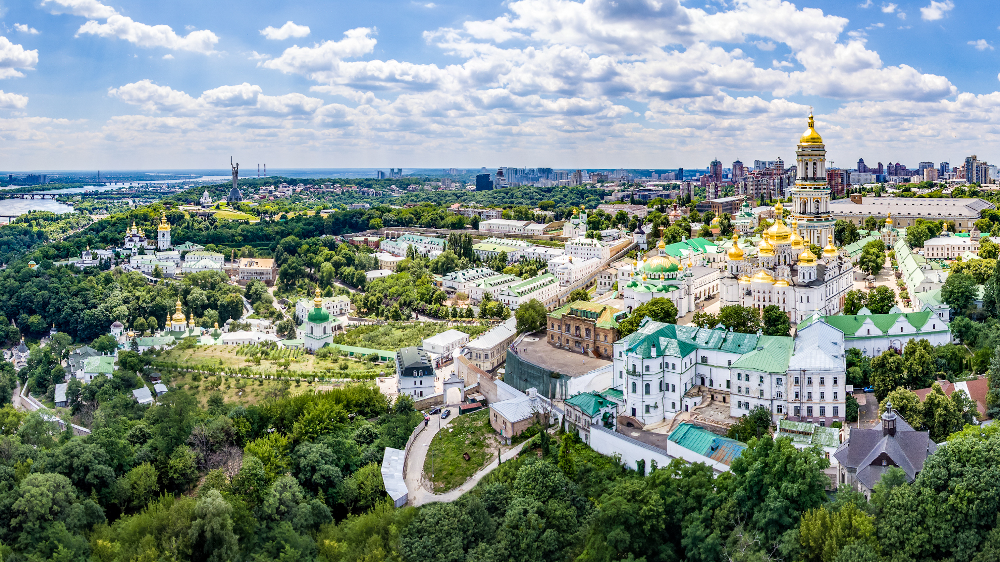

Дата народження: 14 квітня 2007 року. Місце народження: Бориспіль.
Освіта: закінчила Бориспільський ліцей «Перспектива». Зараз навчаюся в КПІ.
Моє улюблене місто — Київ. Це столиця України та одне з найбільших і найцікавіших міст країни. Мені подобається Київ своєю атмосферою, красивою архітектурою, великою кількістю парків та цікавих місць. У місті поєднуються сучасні будівлі та історичні пам'ятки, тому Київ завжди цікаво відвідувати.
